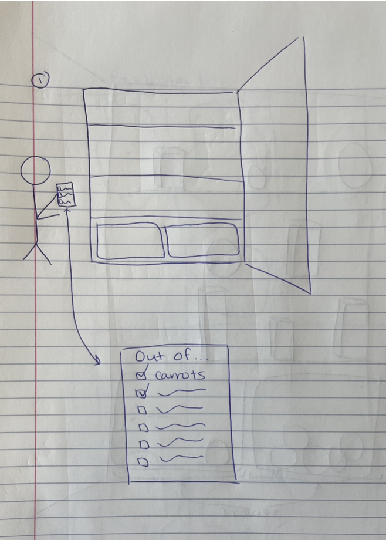
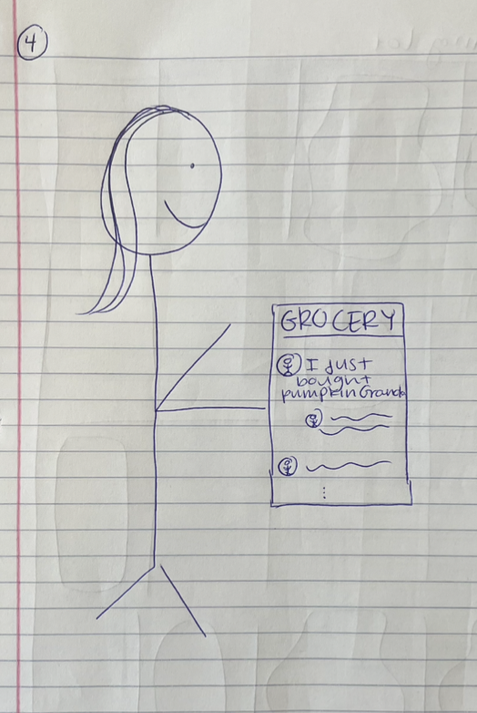
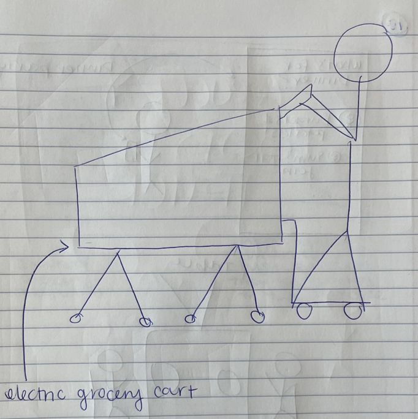
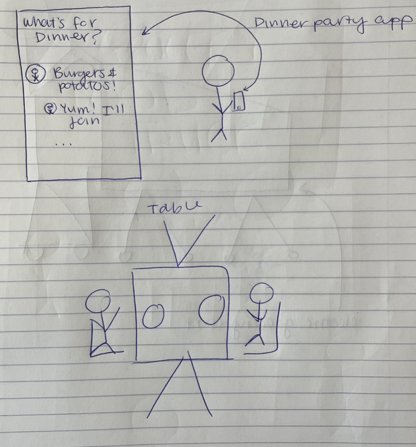
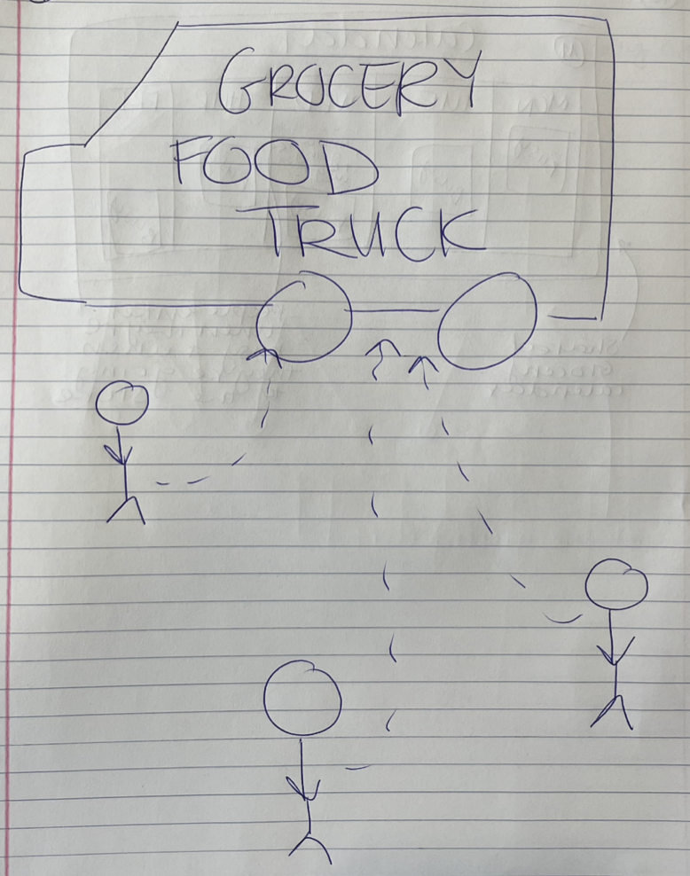

College students lack of access to grocery stores. Specifically, upperclassmen who don't have cars on campus
have a difficult time acquiring affordable groceries.
Objective:
To design a product that will ease these students ability to get groceries.
User Research
User Interview Takeaways:
Students really enjoy and value actually physically being in the grocery store and seeing all of the
different options in front of them
Students are really motivated by socializing and social interactions. This fuels both their fun at the
grocery store and while eating and cooking dinner.
Going to the grocery store on a set schedule really helps them be able to get to the store consistently,
even without their own means of transportation.
Affinity Diagram
Following the user interviews, we used Figma to create an affinity diagram to find commonalities and patterns
between the different user interviews conducted. Click here to view
these diagrams.
Persona
Lydia
22 years old, student
Background
Senior at Cornell University studying Human Development
Grew up in Southern California
Currently enrolled in a heavy course load, 23 credits!
Needs and Goals:
Balance between eating out and cooking at home.
Grocery shop once every week or every other week.
Prefers to physically go to the grocery store in person, but could settle for delivery if the price is
right.
Motivations and Frustrations:
Enjoys spending time with her friends and socializing over meals.
Enjoys eating healthy, home cooked meals filled with lots of good nutrition.
Doesn't know how to drive in the snow.
Design Phase
Identifying product requirements:
Functional Requirements:
Social Interaction
Time Management
Shopping Recommendations
Coordinate Grocery Shopping Trip
Preferred Store
Contextual Requirements:
Physical Strength
Mobile Application
All Day Access
Explore solution space
Instacart -- Aims to deliver groceries to people who can't or don't want to make it to the grocery store.
The problem solution is an app / website where you can choose a grocery store in your area and order your
groceries to be delivered to your home by an Instacart employee.
One big limitation of this solution is cost. There is a delivery fee associated with Instacart that makes
getting groceries much more expensive, which is a big limitation for members of our target audience.
Additionally, there is no real social aspect associated with Instacart, it is solely a transaction.
Anabeles -- Aims to provide affordable and accessible groceries to college students at
Cornell.
The problem solution is a small, Cornell student run, non-profit, grocery store located near the Cornell
Law School. They are seeking to provide affordable grocery store options for all Cornell students,
regardless of year or financial status. Anabels also offers a safe and secure environment, where students
happen upon each other and can socialize while grocery shopping. Because the store is available just to
Cornell students, everyone that you run into when you’re there is also a Cornell student
One limitation of this solution is the limited options. The store is student run, and just located in a
building on campus. They only have a limited amount of options that they can feasibly provide at one time.
Thus, students will not be able to rely on this resource for all of their grocery shopping for a week.
Hello Fresh -- Aims to help inexperienced cooks make interesting and inspired
dinners
The problem solution is that when you subscribe to a Hello Fresh recipe, they send you a package in the
mail every week with a few (however many you sign up for) meals for you to make that week. For each meal,
you get a recipe with instructions for how to prepare the meal, as well as all of the ingredients in the
proportion that you need for that recipe.
One limitation of this solution is that it is rather expensive, so it isn't necessarily a sustainable
solution for the target audience of our product. Additionally, while they send you food and recipes to make
dinners for a week, this doesn't solve the problem of having food for the other two meals every day.
Idea sketching
Grocery Checklist App

Explanation: Users will have the checklist app, which they open when they run out of something
in their fridge or cabinet that they need more of. Then, at the end of the week, the items that are
checked off in the checklist will be automatically ordered for the user.
Response to Persona's Needs: This responds to Lydia's desire to get new groceries, while not
having access to a car. Additionally, Lydia is very busy so having the checklist app automatically deliver
what she needs will save her a lot of time.
Grocery Social Media
Explanation: An app where users can share what they are buying at the grocery store that
functions like a social media app. Users can post new things that they are buying, follow other users, and
like and comment on their purchases.
Response to Persona's Needs: This responds to Lydia's enjoyment of hearing what her friends are
buying at the store to get inspired with new ideas for ingredients, foods and recipes.

Electric Grocery Cart

Explanation: An electric grocery cart that people can ride to the grocery store. The cart has a
pedestal on the back that the person using it can stand on, and power the cart to get around.
Response to Persona's Needs: This responds to Lydia's need to get to the grocery store, without
access to a car. Additionally, the cart is very practical once she gets to the grocery store.
Dinner Party Planning App
Explanation: Users can go on the app, find people who want to eat the same food for them for
dinner that night, and then they can plan a dinner party together. Someone in the party will have access
to a car, so then the whole group will go to the grocery store, get supplies and then make dinner.
Response to Persona's Needs: This responds to Lydia's need to get to the grocery store.
Additionally, she will be able to meet new people on the app and then have dinner with them so this will
also satisfy her desire for socialization.

Grocery Food Truck

Explanation: Grocery stores will have their own food trucks that they can drive around town.
While it is just a food truck sized truck, they will have a myriad of different options, just in slightly
smaller supply. People can just walk up to the truck, order the groceries that they want, and then the
truck can move to a new location if it needs to get more business.
Response to Persona's Needs: This responds to Lydia's need for groceries, without a car to drive
all the way to the full grocery store. Additionally, the cost of upkeep for a food truck is relatively
low, so the truck wouldn't have to up-charge the items, thus responding to Lydia's need for affordable
groceries.
Prototyping and User Testing
Low fidelity prototype
User Testing
After creating the paper prototype of the super shopper delivery cart app, we conducted user testing. We asked
users to complete tasks such as booking a grocery delivery and booking a shopping trip with a friend. Here are
some of the findings from these tests:
Findings:
One new thing that I learned about the participant is that she was trying to go through the whole process
faster than I was anticipating. By this I mean that she took much less time to ponder different options, or
consider what she thought something meant or what she should input into a form for instance. While some of this
could be just disinterest in pretending with a paper prototype, this is still interesting information that
should be factored into the design. Users won't take a long time to consider what to do, they want / need for it
to be very obvious.
The user has a positive response to a few aspects of the design. One was the activity page. She both seemed to
like it, and was able to quickly figure out and navigate through this page. She liked the amount of information
displayed about each trip and the means through which it was displayed. Another aspect of the design that she
had a positive response to were the confirmation screens. She liked that the app gave a confirmation that the
information went through and a quick recap of what she input.
The user also had some negative reactions to the design. She didn't like the way the app had her input the
ingredients into the auto shopper order. She described it as tedious and a waste of time. Additionally, she had
some difficulty understanding what all of the buttons were (i.e., the “+” button) and what the icons on the
navigation bar represented.
Based on the user feedback and some of my own observations through the feedback process, there are a few
changes I plan on making to the design. One big thing is the “+” button that appears in the bottom right of each
page. Initially, I thought this was a good idea because it provides some standardization across the whole site
and is similar to other apps I have seen. However, the actual function of this button was very unclear to the
user and caused more harm than good. I plan to remove this button as its functionality is also able to be
completed elsewhere in the design. Another change I plan to make is either changing the menu bar icons, or even
switching to words. While the icons are fun and I thought informative, they are not standardized enough that the
user knows what the different icons represent. Thus, changing them will help the user more easily navigate the
site.
High fidelity prototype
User Testing
After completing the higher fidelity prototype, we conducted user testing again on the new prototype. Again, we
asked the users to complete the same tasks as with the first prototype and evaluated their performances and
reactions on how they improved their feelings of effectiveness, satisfaction and social connectedness. Here are
some of the findings:
Findings:
Effectiveness: 4/5
Satisfaction: 7.5/10
Social Connectedness: 6.5/10
User testing revealed that on average, the users were able to effectively complete 80% of the tasks.
Additionally, users reported being 75% satisfied with the app and gave it a 6.5 / 10 for how much it improved
their social connectedness. After evaluating user performance and where they were facing difficulties and
dissatisfaction with the app, we made some iterations to the prototype.